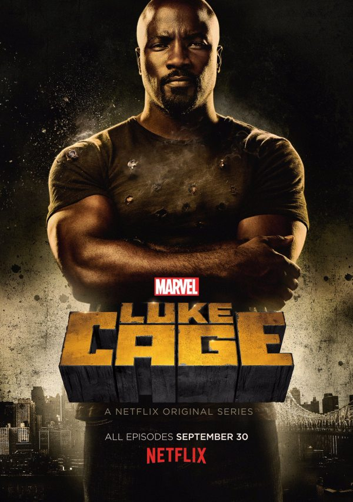

来来来，今年没学习看了那么多剧，得好好总结安利一下，不能白看了……
先说明，由于去年刷《迷失》受到了极大的心理创伤，所以现在几乎不怎么看那种一季24集、一周一拍一播的剧了，目前还在追的只有《神盾局特工》（因为我是MCU粉，不看会强迫症发作，所以还好《卡特特工》砍了）和《生活大爆炸》（因为确实比较喜欢……）。
好好正题开始。
纸牌屋第四季（House of Cards Season 4）
Netflix出品，必属精品。（当然其实不是啦不过他家那些比较热的剧都很值得看）
《纸牌屋》作为Netflix第一部也是game-changing的一部网剧，到现在已经是第四季了。去年的第三季受到的批评较多，很多观众觉得有点沉闷，但如果你因此弃剧那就损失太多了，因为第四季绝对精彩，猛料和逆转总是能打你个措手不及，而且延续了一季死一个主角的传统。（我不说是谁也不说第几集所以不算剧透了啊）
对于不熟悉这部剧的人（虽然感觉不太可能还有……），简单介绍一下剧情：12年美国总统选举，民主党党鞭Frank Underwood协助Garrett Walker赢得大选，但是Walker却食言没有提名Underwood当国务卿。愤怒的Underwood表面上表示理解总统的用心，但却在背后做起了报复总统、爬上高位的计划。全剧充满了阴谋、背叛、谋杀和必不能少的——性，描写了美国政坛里的黑暗斗争。今年知乎上很多人在关注16年大选的时候总会说“现实比《纸牌屋》更精彩”，但实际上我个人还真觉得未必……
有人预测，明年年初的第五季可能是本剧的最终季。不知道这个故事将会在一个什么样的高潮中收场。
IMDb 9.0。
怪奇物语第一季（Stranger Things Season 1）
Netflix的一部新剧，经典的美式恐怖片。之前知乎曾经有个问题问“哪些恐怖片的主角不作死？”全剧的所有主角智商勇气双在线，思维缜密，不作死，不立flag，仔细分析，详细计划，多线作战，最终干掉恶龙（划掉）怪物，救出公主（划掉）好朋友。除此之外，本剧另一大看点是主角是四个十岁左右的小孩儿，全靠土豆枪、弹弓和勇气（当然还有……超能力……），完成了大人都不敢做的任务。
简单介绍一下剧情：故事发生在80年代的印第安纳州，几个有点Nerd气的小男孩Dustin、Lucas和Will在朋友Mike家玩了一整天的龙与地下城之后骑自行车回家，骑得稍快的Will神秘失踪，Will的妈妈发疯了一般地到处搜寻，三个男孩也同样希望贡献自己的力量。与此同时，一个神秘的小女孩也突然冒了出来，而她似乎成了整个事件的关键。
全季刚一上线，就收到了一致好评，甚至有外媒称之为“Netflix有史以来最好看的连续剧”。值得一提的是，在近乎圆满的大结局之后，编剧又留了一个小尾巴，Tease了下一季。不过我个人更希望在第二季看到一个全新的故事，而不是把原来完美的结局打开继续讲……见仁见智吧。还是期待第二季。
IMDb 9.0。
马男波杰克第三季（Bojack Horseman Season 3）
Netflix的原创喜剧成人动画。（提醒一下成人…不是那个意思…）相信大家即便没有看过这部剧，也一定在社交网站上看过大量来自这部剧的截图..因为这部剧是一部著名的“毒鸡汤”。没错，不要被它的“喜剧”外表所迷惑，这部剧里面的每一个笑点，几乎都来自主角们悲催的人生。这部剧能让你打开电视大笑，关掉电视流泪。一些个人观点是，这部剧很可能更多的是一部拍给中年人的剧，因为其中除了Todd二十七八岁以外，连Sarah Lynn也已经三十岁。他们的人生经历，以及他们所面对的中年危机，可能不是我们这些还在上学的年轻人所能理解的。不过这并不是说年轻人不适合看这部剧，我相信每个人都会从其中找到共鸣。另外，在本剧中所有的动物都拟人化，同人类一起生活，剧中还出现了大量对好莱乌明星、美国大公司等等的戏仿，也是本剧笑点的一大组成部分。
剧情简介：一匹过气十多年的中年演员马BoJack在他的经纪“猫”/前女友Princess Carolyn的逼迫下准备写一部自传，而拖延癌晚期的他赶DDL失败只好请了一位枪手Diane代笔。与此同时，过气演员/Diane男友/可能是BoJack最讨厌的“狗”Mr. Peanutbutter和白住在BoJack家里的loser——Todd这两个智障又开始鼓捣一些奇奇怪怪的东西……
第三季的结尾发生了重大变故（no spoilers），第四季一定会很精彩。现在已经预定，简直等不及了……另外还有一件有趣的事：Twitter上有一个账号叫BoJack Horseman，是官方账号，以BoJack本人的身份在发推，推文内容很有趣，直到现在第四季已经播出几个月了还在更新。等更的时候可以看看他。
IMDb 8.4。
夜魔侠第二季&卢克凯奇第一季（Daredevil Season 2 & Luke Cage Season 1）

漫威出品，必属精品！更何况是Marvel和Netflix合作的作品。在夜魔侠第一季、杰西卡琼斯第一季（Jassica Jones season 1）取得巨大成功之后，Netflix放出了Daredevil的续集和“新”角色卢克·凯奇的故事。两部剧延续了前作的黑暗风格，剧中同样充满了犯罪和暴力，同样对打斗的镜头毫不吝啬，能让你热血沸腾地看个爽。夜魔侠第二季中引入了深受漫画读者喜爱的反英雄角色惩罚者（the Punisher），这个角色在电视剧中也不负众望受到了一致好评，Netflix已经着手拍摄他自己的剧集；同时引入了夜魔侠的女友幻影杀手Elektra，关于她的故事很可能会是夜魔侠系列后面的中心内容。卢克·凯奇中则加入了很多美国黑人文化的元素，很有种匪帮的风格。剧中甚至还加入了一些音乐和宗教的成分，也趁这个机会讨论了今年在美国的热点话题：执法部门对黑人的歧视。两部剧保持了漫威的一贯作风，到处是彩蛋和互动，Stan Lee老爷子客串，另外在卢克凯奇里面终于有明确的证据证明Netflix剧和漫威电影同属一个宇宙。
剧情简介：
夜魔侠：Matthew Murdock是纽约治安极差的“地狱厨房”地区的一个律师，他小时候在一次意外中几乎丧失了全部的视力，但身体的其他感官却得到了极大的强化。拥有超能力的Matthew自然而然地成为了一名义警（vigilante），在夜晚穿上紧身衣打击社区里的黑帮犯罪。然而他渐渐发现，一个表面普通的日本黑帮，似乎和古老而可怕的东方传说有关……
卢克凯奇：生活在纽约最乱的哈莱姆区的Luke Cage在监狱中的一次实验中获得了超能力，他不但力大无穷 ，还刀枪不入，连普通的子弹都打不穿他的皮肤。Luke Cage只想过上平静的日子，但无奈麻烦总是会找上门，哈莱姆区的黑帮老大谋杀了他的朋友之后，他走上了复仇的道路。 这么好的剧，又有迪士尼这么阔的爸爸肯定会续订的不必说，不过紧接着的是明年的铁拳，以及捍卫者联盟，DD、JJ、LC的续集可能要再过一两年了。
夜魔侠IMDb8.8，卢克凯奇IMDb7.9。
黑镜第三季（Black Mirror Season 3）
英国神剧，第三季由Netflix接手（但创作者依然是原班人马），一口气拍了6集，还只是半季。一部黑色讽刺剧，每一集都是一个单独的故事，虚构一个荒诞的设定，讲述一个让你瞠目结舌的故事，讨论了人与人、人与科技的话题。每一个设定看上去都荒诞可笑，但实际上是对人性中的弱点、黑点的放大，每一个世界看上去都很不可能，但实际上却又好像就在我们身边，就是我们生活的世界。在看每一个故事的时候都会情不自禁地想“如果是我我该怎么办”，每一次的答案都是“没有办法”。绝望得令人窒息。
剧情简介：我贫乏的语言已经写不出更多的介绍了，大家自己去看吧……
据说本季还有一半，不知道什么时候出；也没说会不会续订，不过应该没问题的吧，本季虽然有一定争议，但整体还是不错的。
IMDb 8.9。
爱第一季（Love season 1）
Netflix的爱情肥皂喜剧。想了好久要不要加上，不过既然看了不能白看对不对……作为肥皂喜剧应该属于不错的（应该……吧？），剧情不复杂，也不狗血，一个简简单单又磕磕绊绊的爱情故事。另外这部剧好像没中字？（反正我看的时候没有）有兴趣的朋友拿来练听力也蛮不错的。
剧情简介：不太会谈恋爱的Gus和有一点酗酒Mickey都和自己的前任刚刚分手，同时工作上又都陷入了低谷。在生活最fucked up的时候他们偶遇，然后相识。Gus很快喜欢上了Mickey，而Mickey似乎有点想要逃避自己的感情。
Netflix一开始就订了两季，所以明年第二季是妥的。考虑到外媒评价一致不错，也许还会有第三季？
IMDb 7.8。
权力的游戏第六季（Game of Thrones Season 6）
HBO出品，必属精品。
最好看的电视剧是哪个？这个问题不太可能有一个全世界观众一致认可的答案，但要是投票的话，GoT得票肯定是最多的。值得一提的是，从这一季开始，电视剧的时间线已经赶上了小说，这就意味着剧集不再有小说作为蓝本，所有的故事都出自编剧D&D之手。虽然在网上对本季批评声音不少，但最后两集绝对能够镇住最挑剔的观众。
剧情简介：这个不用我介绍了吧……
HBO已经确认，GoT将在第八季之后完结，而且第七季只会有7集，第八季只有6集。本季明显有收尾、清支线的迹象。
IMDb 9.4。
西部世界第一季（Westworld Season 1）
这部剧应该也不用介绍了吧，各大平台刷屏了两个多月（I wonder why…），周一刚刚季终。Jonathan Nolan闪电甩掉POI坑之后，开的新坑，很明显看出来小乔不甘心，还想再讲一个AI v. 人类的故事。讲真我看到第五集（还是第四集？记不清了）的时候看到睡着，差点就弃剧了，不过还好坚持了下来，后面几乎一集一个大招，一集比一集震撼。
剧情简介：westworld是一个西部主题公园，里面住满了人造人接待员，前来游玩的顾客可以在这里做任何事情，可以随便打死或者强奸一个接待员，可以沿着设定好的故事线探索，当然也可以爱上他们。如同所有机器人主题的小说、电影、电视剧，这些人造人总有觉醒的一天……
续订是肯定的，看这个架势HBO估计是想把西部世界作为GoT之后的看家作品了。等吧。
IMDb 9.2。
上周今夜秀第三季（Last Week Tonight with John Oliver Season 3）
拿了艾美奖的时评脱口秀。和每日秀、鸡毛秀这样的脱口秀不同之处在于，Last Week Tonight首先是每周一集，所以可能对鸡毛蒜皮关注的比较少，废话也较少。另外Last Week Tonight是一个纯时评节目，没有明星访谈的栏目。Last Week Tonight每集的组成一般是：John先简单回顾（recap）一下本周发生的事情，然后是一个segment：and now this，一般是黑某个人或者某个公司等等，接下来二三十分钟会针对一个主题进行详细的介绍或者讨论，一般是美国社会中的一些问题，当然也可能是政坛中的话题。由于毕竟是个美国的节目，所以有的话题和中国（盗版）观众关系不大。而且Last Week Tonight的定位稍严肃一些，更希望讨论的内容更深刻一些，所以笑点可能不如the Daily Show那么密集。不过也要相信John Oliver的才能。另外就是由于众所周知的原因（……），今年左派脱口秀节目普遍遭到打脸，明年新季不知道会不会有点尴尬……
本季已经结束，新季应该要二三月左右？这种脱口秀没理由不续订的吧。
IMDb 9.1。
黑胶时代第一季（Vinyl Season 1）
怀着沉痛的心情写下这个，因为，我才知道，它被砍了……
如果你还有兴趣的话：这部剧发生在70年代，正是摇滚乐的黄金时代。剧中充斥着毒品和性（of course，毕竟HBO），可能也正是那个年代，那个产业的真实写照。就像豆瓣一位网友所说的，这部剧有点像摇滚界的《华尔街之狼》。当然，摇滚乐才是剧中真正的主角，如果你也是一个摇滚乐迷，那这部剧一定能让你热血沸腾。因为，Rock’n Roll, babe.
剧情简介：唱片老板Richie Finestra在卖掉自己这个看上去挺大牌、实际上已经被作到快完蛋的唱片公司的前一天晚上，参加了一个摇滚party，没想到遭遇了房屋倒塌，大难不死又吸毒吸high了的Richie觉得自己一瞬间领悟了摇滚乐的真谛，于是取消了收购。但是Richie仍然急需挽救这个将死的公司品牌，好在三明治小妹挖到了一个另类新星，Richie又想起了多年前的一位故友……
……
IMDb 7.9。
罪夜之奔&美国罪案故事第一季（The Night Of & American Crime Story season 1）
两部剧讲的都是杀人嫌犯从板上钉钉到被判无罪的故事，前者似乎是一个给无辜的年轻人洗刷冤屈的故事，后者的案件结果在现在普遍被怀疑是误判。但如果我们抛弃成见，抛弃上帝视角，真正客观地看待这两个案子，也许最终确实都是实现了有可能的最大程度的正义。两部剧都广受好评，美国罪案故事更是斩获了多项艾美奖，其中包括最佳限制剧集。
剧情简介：
罪夜之奔：一个巴基斯坦裔年轻人Naz在一天晚上开着父亲的出租车出门参加一个本来不太想去的party，却意外载上了一位有点奇怪的姑娘Andrea。两个人互生情愫之后，Naz开车去了Andrea家，在家里他俩喝酒，嗑药，甚至玩起了拿刀子戳指缝的拼胆量的游戏。紧接着的一场欢愉之后，Naz却在楼下厨房醒了过来记忆全无，而楼上的Andrea已经身受二十几刀惨死在床上。虽然Naz明确的感觉到自己肯定没有杀人，但Andrea还有可能是死在谁的手上呢？
美国罪案故事：洛杉矶警方发现了Ronald Goldman和Nicole Brown Simpson的尸体，他们通知O. J. Simpson他前妻惨死的噩耗时却偶然发现O. J. 似乎有重大嫌疑。后来起获的证据更是钉死了O. J. ，把他定罪似乎毫无压力，就连送上电椅也不是不可能呢……
罪夜之奔可能没有续集，美国罪案故事至少还有两季。第二季会讲卡特琳娜飓风。
罪夜之奔IMDb8.7，美国罪案故事IMDb8.5。
冰血暴第二季（Fargo Season 2）
FX台的黑色幽默惊悚剧，继上一季的巨大成功之后，FX拍了冰血暴的“续集”，讲了退休老警察Lou Solverson年轻时办的一个大案，不过剧情上和上一季没有太大关系，除了一个大剧透：Lou肯定没有死……个人觉得第二季甚至比第一季还棒，无论是剧情上，还是拍摄上，还是剪辑上，还是演绎上。冰血暴和美国罪案故事都是FX的限制剧，今年在艾美奖上同台内斗还真是可惜……反正FX是最大赢家。
剧情简介：新时代的新女性Peggy Blumquist某天下班回家撞上了一个男人，在经历了几秒钟的思想斗争后她决定把他挂在车窗上带回家，让老公在家里砍死，再带到肉店绞成肉泥做成腊肠。万万没想到的是，这个男人恰好是邻省黑帮家族的大佬Rye Gerhardt，而Gerhardt家族又恰好和别的省的黑帮在火拼，这下好像惹祸了呢……
第三季已经预定，前两季的主角都会“以某种方式”回归。可能第三季会有很多旁白吧？
IMDb 9.0。
黑客军团第二季（Mr. Robot Season 2）
美国台的一部黑客犯罪心理惊悚剧。看这分类就好厉害的样子。剧集看起来会有点神神叨叨，但也可以说是向《搏击俱乐部》致敬。（Oops, spoiler alert）一个无政府主义者搅乱世界的故事，和好莱坞经典英雄片不同的是，这次“坏人”是主角。继上季后半的大逆转之后，本季同样也在半截处给观众准备了一个plot twist。怎么讲，Never believe what you see…季终还有一个大悬念，坐等第三季了。
剧情简介：集社交恐惧症、抑郁症、中二病和另一种自带严重剧透的精神病于一身的年轻黑客Elliot Alderson在一家互联网安全公司混吃等死，却在某一天被黑客组织招募，邀请他一起闹革命。后来他发现，事情竟然并没有这么简单……
坑已挖好，坐等第三季了。豆瓣上褒贬不一，所以评分也稍低。有的人喜欢这种风格，有的人可能就比较反感故弄玄虚的东西。一个猜想，不一定对：特喜欢这剧的很有可能都是社交恐惧、中二病十足的Nerd。
IMDb 8.7。
黑暗物质第二季（Dark Matter Season 2）
SyFy的作品。（其实我还在补第一季所以讲的不全……）一部“太空歌剧”（Whatever that is，你们Nerd真会自嗨），设定很有趣，不过有点像单元剧，剧情比较散，节奏比较慢，编剧不停挖坑，也不知道有没有提前想好怎么填，所以这种剧还蛮危险的，有可能留一堆坑说砍就砍了。
剧情简介：一艘飞船上的六个人忽然从冬眠中相继醒来，结果竟然发现自己完全失忆了，不记得自己的名字，不记得自己的过去，只保留了一些本能一样的技能，比如开车，比如耍大刀，再比如打手枪。（Convenient.）他们不知道要飞向哪，也不知道要干什么。正在不知所措时，他们忽然从飞船上的破损信息中得知（Convenient），自己原来是一帮烧杀掠夺无恶不作的罪犯，此行是来搞大屠杀的……
已预订第三季。但愿不会烂尾。
IMDb 7.5。
疑犯追踪第五季（Person of Interest season 5）

纠结了好久还是决定说说这个……以下纯个人观点，begin：
感觉POI上一季脑洞开得过大了，原本一个“利用政府监听分析个人信息从而在犯罪发生前准确预测并及时阻止”是一个多么好的设定，拿来拍单元剧拍的夺好，结果编剧非要开一个“预测程序觉醒成为超越人类的超级AI”和“与此同时还有一个功能相似的AI和它的莫名其妙的追随者决心灭亡人类”这样的经典或称老套的脑洞，开完了才发现，这个脑洞太大了啊，根本不是那种单元剧中常出现的、跨越充其量不超过三集的“长故事”，这脑洞开完就收不回去了……所以反正收视率也下降了，干脆直接放弃，编个大结局，把坑填好，顺便照顾好CP粉，然后直接跑路，投奔隔壁HBO去拍西部世界了……
不过还是希望说不定Netflix什么的还能把这剧捡回来，按照原来的设定，还拍单元剧..虽然实在不可能..
下面是两个有点跑题嫌疑的剧，因为严格来讲它们还没播出..
瑞克和莫蒂第三季（Rick and Morty Season 3）
Adult Swim的作品。前段时间好像是在漫展上主创宣布第三季今年回归，然而现在都这个时候了还一点消息都没有……不过说不定会是圣诞惊喜呢对不对。第三季我们会迎来Rick姥爷的越狱（不然还看啥……），同时由于第二季结尾地球加入了银河系大社区，人类的生活环境会发生巨大的变化，当然故事也会更有趣。不过这季的重点可能就会放在Rick和银河系政府的恩怨上了吧。
剧情简介：智商不太高的小男孩Morty的姥爷Rick是个“疯子科学家”，有一把传送门枪，可以拿来穿越到宇宙的任何角落，甚至是平行空间。而Morty则是他的长期助手，被他拉着去开展各种宇宙探险，然后还总是会（Obviously）惹上各种各样的麻烦。
All I want for ChrismasisRick and Morty Season 3~~~~
IMDb 9.3。
超感八人组第二季（Sense8 Season 2）
Netflix网剧，沃卓斯基姐妹的作品。对，就是那个拍《黑客帝国》和《V字仇杀队》的沃卓斯基兄弟，那个拍《云图》和《木星上行》的沃卓斯基姐弟。（好吧黑人家的性别认同不太好，表示道歉……）不过这样这部剧里出现的大量的LGBT元素也就很好理解了……Sense8这部剧的尺度也确实大，即便对于Netflix也算少见了。（当然还是比不上人家《杀与操之歌》啦）剧情有一点狗血，有一点散，不过到最后算是收到一起了，可能第二季故事线会单一一些？
剧情简介：来自地球的八个角落的八个不同性别、不同取向、不同文化的年轻人，在一天突然开始可以互相通感，可以从队友的视角看世界，可以体验队友的感官，甚至可以操控队友的身体。在他们逐渐发现这件奇怪的事情，并且逐渐摸索着去理解和控制的时候，似乎有专门针对他们的危险在逼近……
圣诞节当天播出第二季。
IMDb 8.4。
天哪我一年里看了好多电视剧………………这还不包括刷的往年的老剧…………………………好惭愧……………………………………